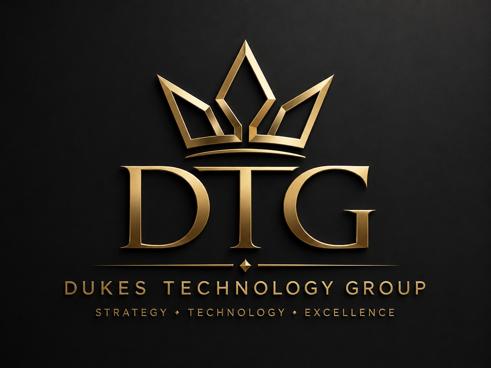

PERTH • WESTERN AUSTRALIA • REMOTE ACROSS AUSTRALIA
Strategy.
Technology.
Excellence.
Practical technology advisory for organisations that need clearer decisions, stronger systems and better outcomes.
Technology StrategyBusiness AnalysisGovernance

BUILT FOR PRACTICAL IMPACT
Technology should move the business forward — not slow it down.
DTG helps organisations turn technology challenges into clear, workable next steps. We bridge business priorities and technical delivery through focused advisory, analysis, governance and implementation support.
WHAT WE DO
Advice that leads to action.
Six complementary areas, shaped around the problem at hand.
Technology & business analysis
Clear requirements, processes, roadmaps and priorities.
Microsoft & security
More confident use of Microsoft 365, identity, endpoints and governance.
Data & delivery
Useful Power BI reporting and practical project support.
LET’S TALK
Have a technology problem worth solving?
Tell us what you’re trying to improve. We’ll start with the problem and define a practical next step.
Contact DTG